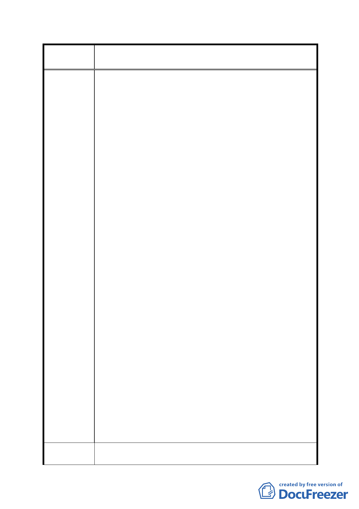

案
名
修訂臺北市「基隆河（中山橋至成美橋段）附近地區土地使
用分區與都市設計管制要點」（北段地區）計畫案
增加容積之總和不得超過基準容積之 50％，容許移入
較高之容積亦不致造成開發強度過高現象，因此並無
降低至 20％之必要。
四、修訂計畫內容對照表編號十八及附表一：
建議理由：
1、「法規命令，有下列情形之ㄧ者，無效：．．．二、無
法律之授權而剝奪或限制人民之自由、權利者。」，行
政程序法第一五八條第一項第二款定有明文；本項限
制人民權利之修訂內容既無法律授權，在在不符憲法
第二十三條揭櫫限制基本人權三大要件：公益目的、
法律保留原則及比例原則，是項行政命令自有自始、
確定、當然無效之虞。
2、面臨計畫道路可獨立經營之店面及負責人辦公室均有
獨立設置廁所或茶水間之需求。
3、需考量夜間加班之婦女於使用集中留設廁所之方便性
並防範治安風險。
4、樓地板面積規模須大於 500 平方公尺，單位登記面積
將逾 250 坪，總價動輒 1.5～2 億，本區商用不動產本
已難與單價位不及 1/2 之內湖科學園區類似用途產品
競爭，如再加大其銷售總價，無異雪上加霜，徒然增
加本區商業用地開發風險。
5、本項規定不啻對市場機能、地主意願、建築規劃強加
限制，如分別共有地主開發後分配面積不及一完整單
位，勢將影響其開發意願，實務執行上有其困難。
五、修訂計畫內容對照表編號十九：
建議理由：
1、土地低強度利用轉作高強度利用時，為求公平正義方
有回饋代金之適用（如內湖科學園區工業用地作商業
利用即為適例）。
2、商業用地作住宅使用係高強度作低強度使用，已造成
權益之損害，且是項高強度轉低強度利用係受迫於如
前所述原因，地主尚未要求政府補償，焉有本末倒置
要求回饋之理？
建議辦法
一、取消編號八中商業區、娛樂區最小建蔽率之限制
二、A1、A2商業區及B1、B2娛樂區合併大型基地開發5%容積
- 64 -